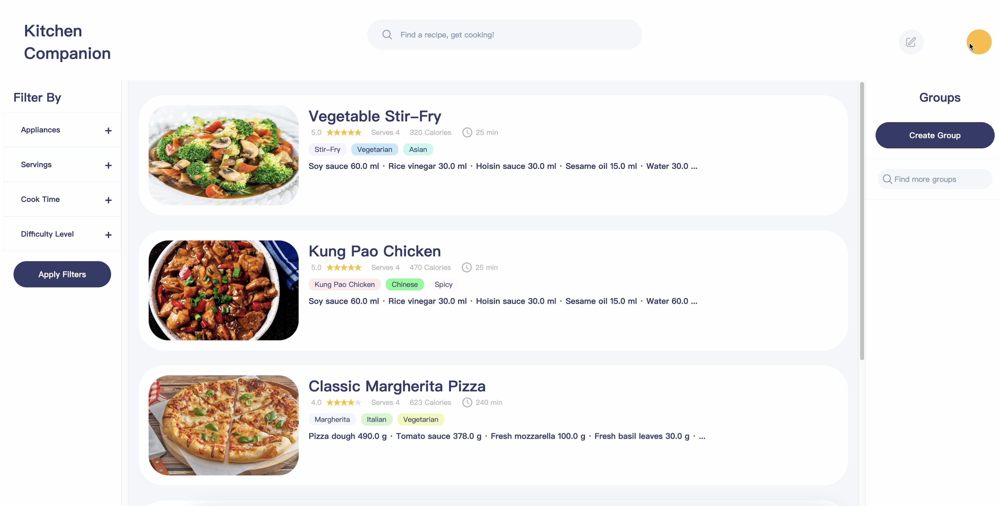
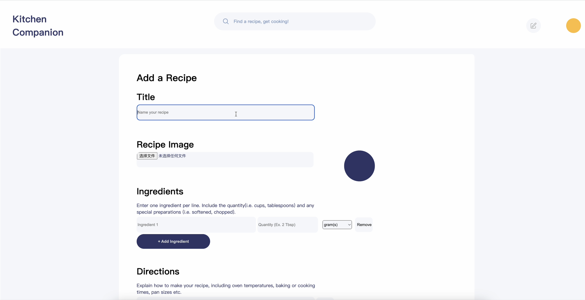
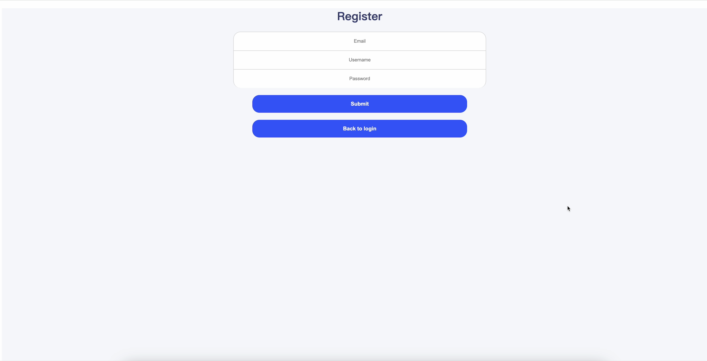

Kitchen Companion
Project Description:
Overview: Kitchen Companion is a web-based recipe library that enables users to discover, add, and manage recipes efficiently. It provides features like recipe search, filtering, rating, and personal recommendations. It also includes functionalities for meal planning and shopping list generation.
Team Members:
- Bolun Zhang
- Thomas Hynes
- Wonho Lee
- Caroline Lee
- Richard Chang
- Javad Baghirov
GitHub Repository: https://github.com/CS407-Kitchen-Companion
Tools and Technologies:
- Frontend: NextJS
- Backend: Spring Boot with Java
- Database: PostgreSQL
- File Storage: Amazon S3
My Role in the Project:
My contributions to the project include implementing and testing various backend features:
- In Sprint 1, I developed the logout feature and the backend logic for password change.
- In Sprint 2, I implemented account deletion functionality and backend support for group search.
- In Sprint 3, I assisted with backend refactoring and improved authentication processes.
Pictures and Descriptions:
Login Page

A simple login page with fields for username and password, and options to register or recover a password.
Main Page
The main page displays a list of recipes with filtering options based on appliances, servings, cook time, and difficulty level.
Add Recipe Page
Users can add new recipes, including title, image, ingredients, and directions.
Registration Page
The registration page with fields for email, username, and password to create a new account.
Code Descriptions:
1. createAuthenticationToken (Login)
public ResponseEntity createAuthenticationToken(@RequestBody Map payload) {
try {
authenticate(payload.get("username"), payload.get("password"));
UserDetails userDetails = userDetailsService.loadUserByUsername(payload.get("username"));
User user = userRepository.findByUsername(userDetails.getUsername())
.orElseThrow(() -> new UsernameNotFoundException("No such username"));
if (!user.isVerified()) {
return ResponseEntity.status(400).body(new ErrorResponse(400, "Please verify your email."));
}
String token = jwtTokenUtil.generateToken(userDetails);
return ResponseEntity.ok(new JwtResponse(token, user.getId()));
} catch (Exception e) {
return ResponseEntity.status(500).body(new ErrorResponse("Unknown Error"));
}
} Explanation: This function authenticates the user, checks email verification, and generates a JWT token if successful.
2. addRecipe (Add Recipe)
public ResponseEntity addRecipe(@RequestBody @Valid NewRecipeRequest payload) {
User user = userService.getAuthUser();
if (user == null) {
return ResponseEntity.status(HttpStatus.UNAUTHORIZED).body(new ErrorResponse(401, "You must be logged in to create a new recipe."));
}
try {
Long createdBy = user.getId();
return recipeService.createRecipe(payload, createdBy);
} catch (Exception e) {
return ResponseEntity.status(HttpStatus.INTERNAL_SERVER_ERROR).body(new ErrorResponse(500, "Internal Server Error"));
}
}Explanation: This function adds a new recipe to the database. It verifies if the user is logged in and then saves the recipe data.
3. searchRecipes (Search and Filter Recipes)
public ResponseEntity searchRecipes(@RequestParam(required = false) String title,
@RequestParam(required = false) List<String> tags, ...) {
List<Recipe> recipes = recipeService.searchRecipesByFilters(title, tags, appliances, ...);
if (recipes.isEmpty()) {
return ResponseEntity.status(HttpStatus.NOT_FOUND).body(new GenericResponse(404, "No recipes found"));
}
return ResponseEntity.ok(new GenericResponse(recipes));
} Explanation: This function searches for recipes based on filters like title, tags, and appliances, and returns a list of matching recipes.